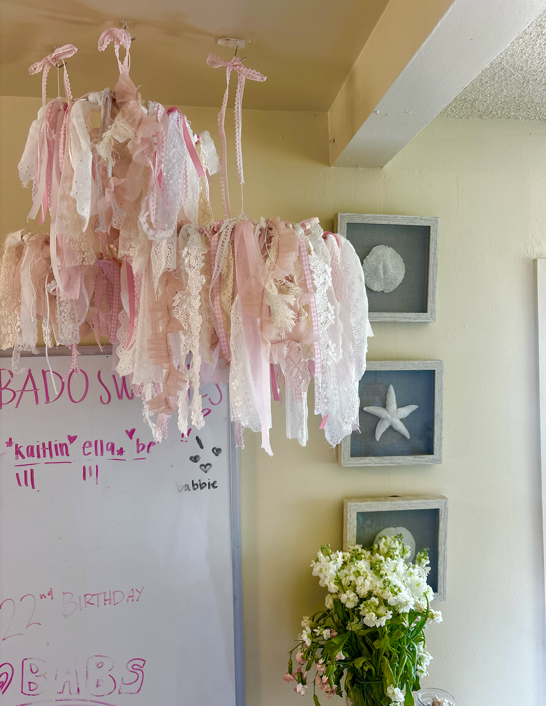

Ally's Portfolio⭐


This project focuses on a piece I designed in Adobe Illustrator. These designs are all built from scratch using the pen tool, custom gradients, and hand-colored swatches. I focused on layering each element intentionally to bring depth, dimension, and a more lifelike quality to otherwise flat vector forms. One of the standout pieces from this series is a custom floral pattern I designed entirely in Illustrator. After experimenting with swatches and redrawing each flower and connecting line digitally, I printed the pattern onto a hoodie to turn the illustration into wearable art. Overall, this project pushed me to refine my digital art techniques while also exploring how my designs could live beyond the screen.